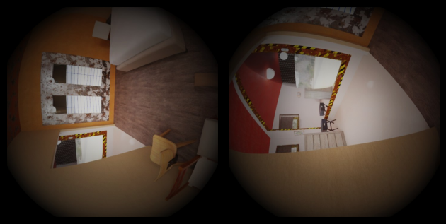
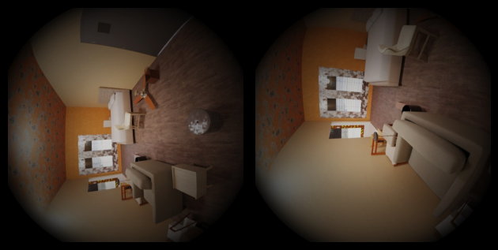
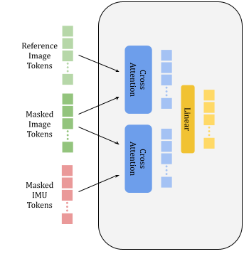
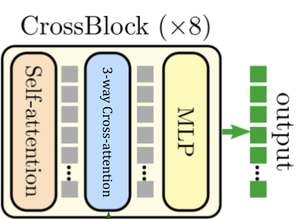
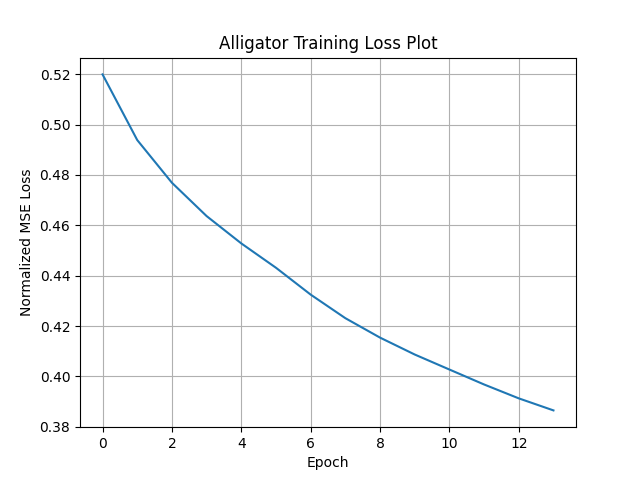
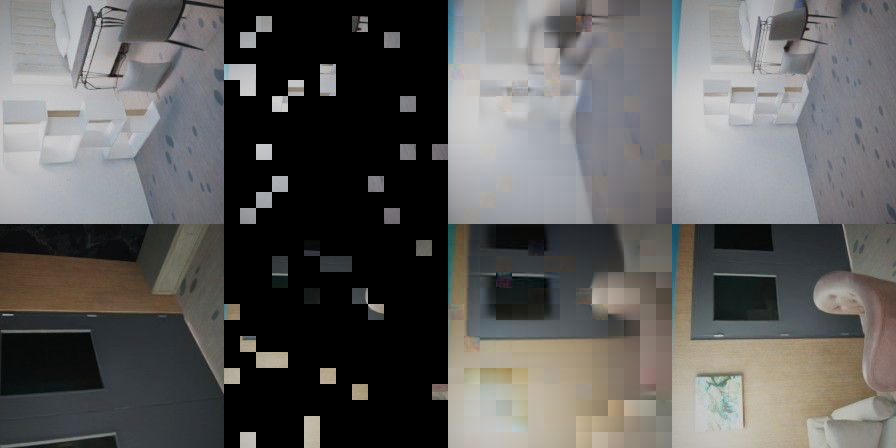

| Alligator: Unified Embeddings for Visual Inertial Odometry | |||
| Samuel Tian | Cynthia Cao | ||
| Final project for 6.7960, MIT | |||
| Alligator: Unified Embeddings for Visual Inertial Odometry | |||
| Samuel Tian | Cynthia Cao | ||
| Final project for 6.7960, MIT | |||
Many SLAM systems rely on visual-inertial odometry (VIO), which fuses camera images with IMU data. However, when a visual pipeline fails due to occlusions, poor lighting, or motion blur, the noise inherent in low-cost IMU sensors leads to poor localization. This motivates improving inertial-only methods for more robust SLAM systems.
Meanwhile, state-of-the-art end-to-end learning approaches such as DUST3R [10] / MAST3R [7], and VGGT [9], have shown impressive performance on 3D vision tasks and strong potential for improving VIO SLAM. These results suggest that they learn powerful geometric priors that could be used to improve inertial-only navigation. However, in spite of their increased robustness, they can still struggle in poor visual conditions and lack consistent metric scale, which could potentially be mitigated using the additional information IMUs provide. As such, we propose incorporating IMU data into these pipelines to enhance performance across both modalities. Two key questions are:
We introduce Alligator (Attentional Learning for Linked Image Generation And Trajectory Oriented Reasoning), a self-supervised training objective designed for learning joint embeddings for image and temporal IMU data. By utilizing masked sequence modeling, we show that simultaneously learning embeddings across multiple modalities has the potential to yield generalizable representations of visual-inertial data that can be used in a variety of downstream 3D vision tasks.
Pretraining via masked image modeling (e.g., CroCoNet [11]) has been key to enabling strong downstream 3D performance. Related work in vision-language learning [4] [12] shows the potential of masked modeling for learning cross-modal representations.
End-to-end 3D reconstruction models like DUST3R [10] and MAST3R [5] use vision transformers to estimate dense, aligned point clouds from image pairs without requiring camera calibration. However, they operate on only two views and require post-processing to incorporate more. VGGT [9] improves on this with a feed-forward network that jointly predicts key 3D attributes across multiple views using DINO-pretrained features.
In parallel, inertial-only methods like TLIO [6] predict motion from IMU sequences via learned priors, but are sensitive to reference frames and fail to generalize across modalities. Buchanan et al. [1] learn IMU bias evolution but rely on sensor-specific tuning and geometric supervision.
To our knowledge, no prior work has combined IMU data with end-to-end 3D vision models. While image-based models can infer 3D scene geometry, IMU sequences also contain implicit 3D information. VGGT demonstrates that training on related tasks can improve performance; as such, we want to understand if combining visual and IMU data can enable calibration-free VIO and lead to more robust SLAM systems.
We propose a self-supervised pre-training task that leverages two temporally adjacent images of the same scene, along with the IMU data captured in between. The second image and the IMU sequence are randomly masked, and the model is trained to reconstruct them by minimizing mean squared error. Training images and IMU data will be taken from the Project Aria Synthetic Environments [3] dataset.


The Aria Synthetic Environments dataset contains hundreds of thousands of synthetic 3D indoor scenes. A camera trajectory is simulated, and the captured visual data is available alongside a global pointcloud. Following the methodology used to generate data in CroCo, we wish to select image pairs with moderate “co-visibility”, which is a heuristic for image similarity that is roughly the percentage of the pointcloud visible in both images. No overlap between the two images would result in poor pre-training performance because the reference input does not provide sufficient context, while high overlap would hurt the quality of our embeddings because little additional information needs to be learned by the encoder.
To generate these image pairs, we randomly sample a reference image from the dataset. We then randomly sample a second image taken within 50 timesteps of the first image. The overlap between the two images can be computed by counting the number of visible 3D points the images have in common. If the number of overlapping points falls within a specified range, the image pair is added to our pre-training dataset, otherwise we continue sampling. We also place a lower bound on the time delta between the two images to minimize the chance that we add two near-identical images to our dataset. For each image pair, we also include the camera's trajectory between the timestamps at which the images were captured. IMU data can be computed by fitting the camera’s positional and angular trajectories to a k-degree polynomial and differentiating. Figure 1 illustrates some of our generated image pairs.
For our pretraining dataset, we ended up processing 28846 distinct indoor scenes from the Aria Synthetic Environments dataset, attempting to extract 50 image pairs from each scene for a total of 1342776 visual-inertial triplets. For some scenes, it was more difficult to find image pairs that satisfied the time delta and co-visibility requirements, so the average number of triplets sampled per scene ends up being a little less than 50.
Our AlligatorNet model augments the CroCoNet architecture to incorporate IMU sequence embeddings. Figure 2, adapted from CroCoNet, illustrates these changes. The image encoders are identical to the image encoders used in CroCoNet; both the reference image and the masked image are encoded using a shared-weight vision transformer. The IMU sequence will be encoded using a sequence of self-attention transformer blocks. During the encoding phase, image and IMU masks will be randomly generated. We mask 90% of the target image (following CroCoNet) and 40% of the IMU sequence.
The decoder is multimodal and should fuse the generated embeddings for both input images and the IMU sequence. Target masked image tokens and target masked IMU sequence tokens are reconstructed in parallel, and the reconstruction of Ideally, the tokens in the target image sequence should attend to both the reference image tokens and the masked IMU tokens. Thus, we implement a decoder block that utilizes a 3-way cross attention mechanism, in which we have the target sequence attend to the two context sequences independently, after which we fuse the output attention scores using a simple linear layer. Similarly, we have the target IMU sequence attend to both the reference image and the masked image. The decoder block replaces the cross-attention layer in CroCoNet’s CrossBlock with the aforementioned 3-way cross attention layer, and thus consists of a self-attention layer, a 3-way cross attention layer, and an MLP in sequence.


Finally, we append two prediction heads to the output of the decoder. One prediction head takes the target image tokens as input and outputs a reconstruction of the masked image, and the second prediction head takes the target IMU tokens as input and outputs a reconstruction of the masked IMU sequence. For both the image and IMU sequence, we compute the MSE between the ground truth masked tokens and the reconstructed tokens, normalizing within each modality. Our final loss criterion will be a weighted sum of these normalized losses.

